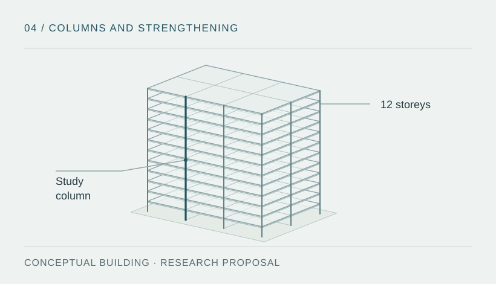

Technical problem and objective
Post-earthquake assessment and preventive intervention require comparison of strengthening alternatives according to their effects on stiffness, strength, deformation capacity and ductility. Local effects in a column must be related to the assumptions governing building response.
Proposed objective: define a manageable set of numerical scenarios to study representative columns from reinforced concrete buildings up to 12 storeys and compare local strengthening strategies.

Proposed study design
- Define representative columns and structural configurations within the proposed height limit.
- Compare jacketing and CFRP strengthening alternatives against a reference condition.
- Develop a parametric study with controlled variables, including concrete strength and demand level.
- Explore trends and indicators through a feasible numerical programme, without including original physical tests in the current scope.
Tools to be selected
The study will require structural modelling and data-processing tools. Software, constitutive models and analysis procedures have yet to be selected. No implementation in ETABS, SAP2000 or OpenSeesPy is documented at this stage.
Planned procedure
- Define the question: establish indicators, comparison conditions and effects excluded from the study.
- Build the case matrix: set geometry, material properties, boundary conditions and strengthening alternatives.
- Select and assess models: justify constitutive laws, seismic demand and the validation strategy using documented references.
- Run the parametric study: control one variable per comparison where possible, and record sensitivity and convergence.
- Interpret results: distinguish local trends from global effects, identify limits and document uncertainty.
These stages form a proposed work programme; they do not indicate that the analyses have been performed.
Study status and scope
The research is at the methodological definition stage. Geometry, the constitutive model, seismic demand, validation and final limitations remain to be established. There are no definitive numerical results to present.
| Available | Work still to be developed |
|---|---|
| Initial question and preliminary scope up to 12 storeys. | Research protocol, testable hypotheses and case selection. |
| Proposed strengthening alternatives. | Bibliography, models, parameters and validation strategy. |
| Conceptual illustration of scope. | Calculation files, results, sensitivity analysis and conclusions. |
Development objectives
The proposal aims to establish a testable research question, a controlled parametric comparison and a justified selection of models. The work will need to distinguish local column response from conclusions that can be supported about the building as a whole.